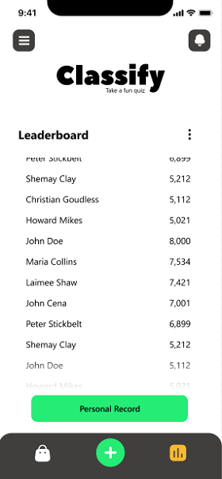

Cognitivism
Piaget’s Theory
Educational Attainment In Piaget's Theory it says that the nature of knowledge itself and how humans gradually come to acquire, construct, and use knowledge. We have included a feature in our app where the user can set their preferred education level according to the ages who will use the application, in that way they will be able to answer the questions provided. In Piaget's Theory since it states in his theory that we learn things by using our senses so we have included such a feature in our app where users can identify such images, listen to videos. We also included a hint on each questions


Bloom’s Taxonomy of Cognitive Development
In our app in order to apply the ausubel’s theory we put questions that are connected to each other like you will not know the answer of the next question if you didn’t put attention to the question before the next question and almost of the questions that put in the app specifically in the gameplay is questions that user’s already know the answer they just need to recall.
Bruner’s Theory of Intellectual Development
We applied Bruner’s theory in our application by using 2 of the theory’s representation which is the Iconic representation (image-based) and Symbolic representation (language-based). in the iconic stage, it involves an internal representation of external objects visually in the form of an image that we placed on the answers based on the question. And on the Symbolic representation, is when information is stored in the form of a code or symbol such as language. Each symbol has a fixed relation to something it represents. We decided to do the same with the iconic representation by also including symbols on our questions.
Vygotsky’s Sociocultural Theory of Cognitive Development
By using Vygotsky's sociocultural theory of cognitive development we implemented a classroom lobby where users can go join and converse, interact and play collaborative games, Educational, QnA, and kahoot style games with other users/players while providing hints and proper instructions and gradually turning over more if the mental activity. Each lobby can hold 30 users/players.
Ausubel’s Cognitive Theory of Cognitive Development
In our app in order to apply the ausubel’s theory we put questions that are connected to each other like you will not know the answer of the next question if you didn’t put attention to the question before the next question and almost of the questions that put in the app specifically in the gameplay is questions that user’s already know the answer they just need to recall.